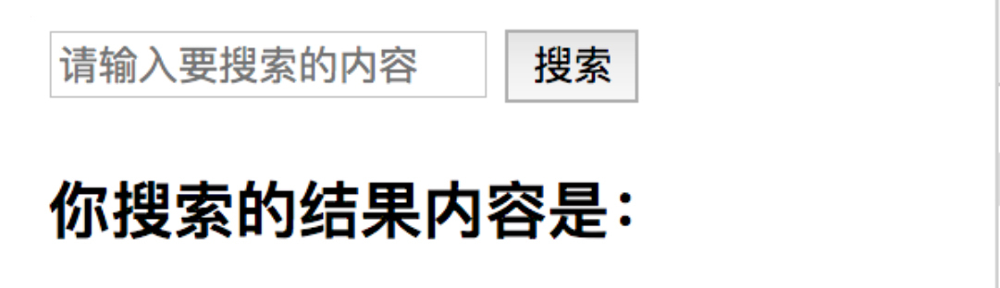
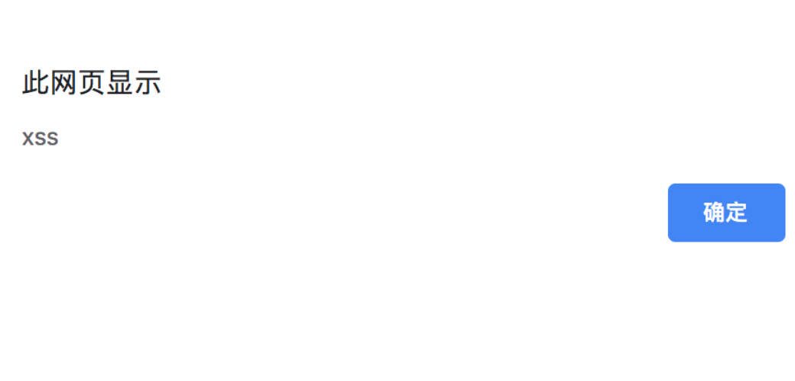
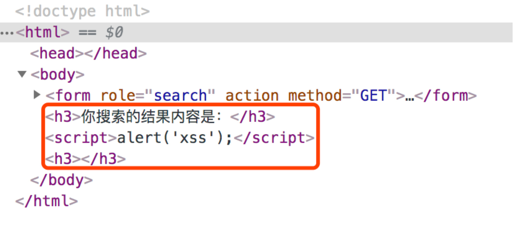

- 00 开篇词 别说你没被安全困扰过.md.html
- 01 安全的本质：数据被窃取后，你能意识到问题来源吗？.md.html
- 02 安全原则：我们应该如何上手解决安全问题？.md.html
- 03 密码学基础：如何让你的密码变得“不可见”？.md.html
- 04 身份认证：除了账号密码，我们还能怎么做身份认证？.md.html
- 05 访问控制：如何选取一个合适的数据保护方案？.md.html
- 06 XSS：当你“被发送”了一条微博时，到底发生了什么？.md.html
- 07 SQL注入：明明设置了强密码，为什么还会被别人登录？.md.html
- 08 CSRF_SSRF：为什么避免了XSS，还是“被发送”了一条微博？.md.html
- 09 反序列化漏洞：使用了编译型语言，为什么还是会被注入？.md.html
- 10 信息泄露：为什么黑客会知道你的代码逻辑？.md.html
- 11 插件漏洞：我的代码看起来很安全，为什么还会出现漏洞？.md.html
- 13 Linux系统安全：多人共用服务器，如何防止别人干“坏事”？.md.html
- 14 网络安全：和别人共用Wi-Fi时，你的信息会被窃取吗？.md.html
- 15 Docker安全：在虚拟的环境中，就不用考虑安全了吗？.md.html
- 16 数据库安全：数据库中的数据是如何被黑客拖取的？.md.html
- 17 分布式安全：上百个分布式节点，不会出现“内奸”吗？.md.html
- 18 安全标准和框架：怎样依“葫芦”画出好“瓢”？.md.html
- 19 防火墙：如何和黑客“划清界限”？.md.html
- 20 WAF：如何为漏洞百出的Web应用保驾护航？.md.html
- 21 IDS：当黑客绕过了防火墙，你该如何发现？.md.html
- 22 RASP：写规则写得烦了？尝试一下更底层的IDS.md.html
- 23 SIEM：一个人管理好几个安全工具，如何高效运营？.md.html
- 24 SDL：怎样才能写出更“安全”的代码？.md.html
- 25 业务安全体系：对比基础安全，业务安全有哪些不同？.md.html
- 26 产品安全方案：如何降低业务对黑灰产的诱惑？.md.html
- 27 风控系统：如何从海量业务数据中，挖掘黑灰产？.md.html
- 28 机器学习：如何教会机器识别黑灰产？.md.html
- 29 设备指纹：面对各种虚拟设备，如何进行对抗？.md.html
- 30 安全运营：“黑灰产”打了又来，如何正确处置？.md.html
- 加餐1 数据安全：如何防止内部员工泄露商业机密？.md.html
- 加餐2 前端安全：如何打造一个可信的前端环境？.md.html
- 加餐3 职业发展：应聘安全工程师，我需要注意什么？.md.html
- 加餐4 个人成长：学习安全，哪些资源我必须要知道？.md.html
- 加餐5 安全新技术：IoT、IPv6、区块链中的安全新问题.md.html
- 模块串讲（一）Web安全：如何评估用户数据和资产数据面临的威胁？.md.html
- 模块串讲（三）安全防御工具：如何选择和规划公司的安全防御体系？.md.html
- 模块串讲（二）Linux系统和应用安全：如何大范围提高平台安全性？.md.html
- 结束语 在与黑客的战役中，我们都是盟友！.md.html
- 捐赠
06 XSS：当你“被发送”了一条微博时，到底发生了什么？
你好，我是何为舟。
在前面的课程中，我们重点讲解了安全的一些基础知识，更多地是从宏观的层面上来谈论安全。但安全不是一个靠宏观指导就能够落地的东西。因此，接下来我会结合真实案例中的各种安全问题，来介绍具体的安全防护手段和工具。今天，我们就先从最基础的Web安全开始。
在Web安全这个模块中，我们所谈论的Web，是指所有基于HTTP或者其他超文本传输协议（RPC等）开发的应用，包括：网页、App、API接口等等。这类应用的共同点是：通过HTTP等文本协议，在客户端和服务端之间进行数据交换。客户端需要将服务端传出的数据展示渲染出来，服务端需要将客户端传入的数据进行对应的处理。而Web安全所涉及的正是这些应用中存在的各类安全问题。
背景介绍完了，下面我们进入今天的正题。
基于前面安全基础知识的学习，你现在通过了面试官的考核，成功进入了这家公司。某一天，公司的网页应用中发生了一件事。
有很多用户发送了同样类型的内容，而且这些内容都是一个带有诱惑性的问题和一个可以点击的链接。这些用户全部反馈说，这不是他们自己发的。前端开发表示，用户内容都是后端产生的，他不负责。后端开发表示，这些内容都是用户自己提交上来的，他也不负责。正当大家议论纷纷的时候，你作为学习过安全专栏的人，敏锐地发现了问题的原因：这是黑客发起了XSS攻击。
这个事情的原型，其实是2011年微博真实出现的一次安全事件。整个事件的核心问题，其实出在这个可以点击的链接上。在这个事件中，黑客并不需要入侵到微博服务器中，只要用户点击了这个链接，就会“被发送”这样的博文。
这就是著名的XSS攻击所能够实现的效果。那么，XSS攻击究竟是怎么产生的呢？我们究竟该如何防护呢？今天我就带你来了解这个网页中最经典的XSS攻击。
XSS攻击是如何产生的？
首先，我们来看，XSS攻击是如何产生的。作为最普遍的网页语言，HTML非常灵活，你可以在任意时候对HTML进行修改。但是，这种灵活性也给了黑客可趁之机：通过给定异常的输入，黑客可以在你的浏览器中，插入一段恶意的JavaScript脚本，从而窃取你的隐私信息或者仿冒你进行操作。这就是XSS攻击（Cross-Site Scripting，跨站脚本攻击）的原理。
你现在应该对XSS有了一个大致的了解，除此之外，你还需要了解三种XSS攻击，它们分别是：反射型XSS、基于DOM的XSS以及持久型XSS。下面我们一一来看。
1.反射型XSS
假设现在有一个搜索网页，当你输入任意一个关键词，并点击“搜索”按钮之后，这个网页就会给你展示“你搜索的结果内容是：XXX”。

我们以PHP为例，这个网页的服务端实现逻辑如下所示：
<!DOCTYPE html>
<html>
<body>
<form role="search" action="" method="GET">
<input type="text" name="search" placeholder="请输入要搜索的内容">
<button type="submit">搜索</button>
</form>
<?php
if (isset($_GET['search']) && !empty($_GET['search'])) {
$search = $_GET['search'];
echo "<h3>你搜索的结果内容是：" . $search . "</h3>";
}
?>
</body>
</html>
我们可以看到，这段代码的逻辑是将搜索框输入的内容，拼接成字符串，然后填充到最终的HTML中。而且这个过程中没有任何的过滤措施，如果黑客想要对这个过程发起攻击，他会输入下面这行代码：
</h3><script>alert('xss');</script><h3>
黑客输入这段字符后，网页会弹出一个告警框（我自己测试的时候，发现部分浏览器，如Safari不会弹出告警框，这是因为浏览器自身提供了一定的XSS保护功能）。

通过查看网页的源码，可以发现，这中间多了一段JavaScript的脚本：

这就是我们所说的反射型XSS攻击的过程。其实它攻击的原理很简单。我们可以总结一下，即通过开头的</h3>和结尾的<h3>，将原本的<h3>标签进行闭合，然后中间通过<script>标签插入JavaScript代码并执行，就完成了整个反射型XSS的流程。
你可以注意一下浏览器的地址：http://localhost/index.php?search=<%2Fh3>